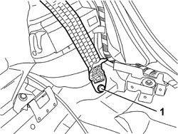
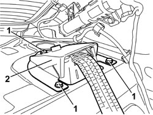
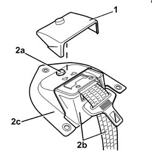
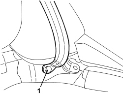

7065B10 REAR SEAT BELT (ONE), LEFT OR RIGHT - R.R.
- Path
- Procedures > 70 FITTINGS > 7065 SAFETY BELTS AND ACCESSORIES > 7065B REAR SAFETY BELTS > 7065B10 REAR SEAT BELT (ONE), LEFT OR RIGHT - R.R.
- Kind
- repair procedure (removal / refitting; the operation number is the code)
- Applies to
- all engines; all production periods
- Interactive page
- https://sloeber94.github.io/elrnDB/#/939011382
Applies to: all engines; all production periods
 Removing
Removing
 Refitting
RefittingOp. 5550D16 THIRD BRAKE LIGHT - R+R
Op. 7050A20 ONE-PIECE REAR SEAT CUSHION - R.R.
For the left and right sides.
Op. 7040L44 REAR DOOR RUNNING BOARD (ONE), LEFT OR RIGHT - R.R.
Op. 7050A19 REAR SEAT BACKREST - R.R
Op. 7040H42 REAR PILLAR TRIM (ONE), LEFT OR RIGHT- R.R
Op. 7025B66 BOOT COMPARTMENT SEAL - R+R
Op. 7040H80 REAR PARCEL SHELF - R.R.
1. Undo the bolt fixing the end of the seat belt.

Applies to: all engines; all production periods
1. Undo the bolts fixing the seat belt reel mount.
2. Remove the seat belt with mount.

Applies to: all engines; all production periods
1. If necessary, release the rubber protection.
2. Unscrew bolt (2a) and separate the seat belt with reel (2b) from mount (2c).

Applies to: all engines; all production periods
Refitting
Removing- Check that the seat belt is not damaged.
- If removed, position the reel on the mount and secure with a bolt, then tighten to the specified torque.
Component | Fastening | dia | Value (daNm) | Validity |
|---|---|---|---|---|
REAR SEAT BELT REEL | Bolt | M8x20 | 2.2 ÷ 2.6 |
- Fit the rubber protection.
- Place the seat belt with mount in position.
- Screw in the bolts fixing the seat belt reel mount, then tighten to the recommended torque.
Component | Fastening | dia | Value (daNm) | Validity |
|---|---|---|---|---|
REAR SEAT BELT REEL SUPPORT | Bolt | M8x20 | 2.2 ÷ 2.6 |
- Position the end of the seat belt and tighten the bolt to the specified torque.
Component | Fastening | dia | Value (daNm) | Validity |
|---|---|---|---|---|
SEAT BELT ENDS | Bolt | M10 | 3.6 ÷ 4.4 |
Op. 7040H80 REAR PARCEL SHELF - R.R.
Op. 7025B66 BOOT COMPARTMENT SEAL - R+R
Op. 7040H42 REAR PILLAR TRIM (ONE), LEFT OR RIGHT- R.R
Op. 7050A19 REAR SEAT BACKREST - R.R
Op. 7040L44 REAR DOOR RUNNING BOARD (ONE), LEFT OR RIGHT - R.R.
Applies to: all engines; all production periods; only with equipment: Station Wagon
Removing
RefittingOp. 7050A20 ONE-PIECE REAR SEAT CUSHION - R.R.
Op. 7040G40 LOAD COMPARTMENT LIGHT BULB HOLDER - R R
Op. 7040B22 LUGGAGE COMPARTMENT/LOAD PLATFORM MOULDING - R+R
Op. 7040B04 SIDE MOULDING (ONE) LH OR RH FOR LUGGAGE COMPARTMENT - R.R.
Op. 7040B10 LOAD PLATFORM (LUGGAGE PLATFORM) TRIM - R+R
Op. 7040B30 L/H OR R/H SIDE SUPPORT (ONE) FOR LOAD PLATFORM COVER BLIND - ARRANGE
1. Undo the bolt fixing the end of the rear seat belt.

Applies to: all engines; all production periods; only with equipment: Station Wagon
1. Undo the bolts fixing the rear seat belt reel.
2. Remove the rear seat belt and reel.

Applies to: all engines; all production periods; only with equipment: Station Wagon
Refitting
Removing- Check that the rear seat belt is not damaged.
- Place the rear seat belt in position.
- Screw in the bolts fixing the rear seat belt reel, then tighten them to the recommended torque.
Component | Fastening | dia | Value (daNm) | Validity |
|---|---|---|---|---|
REAR SEAT BELT REEL | Bolt | M8x20 | 2.2 ÷ 2.6 |
- Position the end of the rear seat belt and tighten the bolt to the specified torque.
Component | Fastening | dia | Value (daNm) | Validity |
|---|---|---|---|---|
SEAT BELT ENDS | Bolt | M10 | 3.6 ÷ 4.4 |
Op. 7040B30 L/H OR R/H SIDE SUPPORT (ONE) FOR LOAD PLATFORM COVER BLIND - ARRANGE
Op. 7040B10 LOAD PLATFORM (LUGGAGE PLATFORM) TRIM - R+R
Op. 7040B04 SIDE MOULDING (ONE) LH OR RH FOR LUGGAGE COMPARTMENT - R.R.
Op. 7040B22 LUGGAGE COMPARTMENT/LOAD PLATFORM MOULDING - R+R
Topics linked from this page (12)
- 5550D16 THIRD BRAKE LIGHT - R+R
- 7025B66 BOOT COMPARTMENT SEAL - R+R
- 7040B04 SIDE MOULDING (ONE) LH OR RH FOR LUGGAGE COMPARTMENT - R.R.
- 7040B10 LOAD PLATFORM (LUGGAGE PLATFORM) TRIM - R+R
- 7040B22 LUGGAGE COMPARTMENT/LOAD PLATFORM MOULDING - R+R
- 7040B30 L/H OR R/H SIDE SUPPORT (ONE) FOR LOAD PLATFORM COVER BLIND - ARRANGE
- 7040G40 LOAD COMPARTMENT LIGHT BULB HOLDER - R R
- 7040H42 REAR PILLAR TRIM (ONE), LEFT OR RIGHT- R.R
- 7040H80 REAR PARCEL SHELF - R.R.
- 7040L44 REAR DOOR RUNNING BOARD (ONE), LEFT OR RIGHT - R.R.
- 7050A19 REAR SEAT BACKREST - R.R
- 7050A20 ONE-PIECE REAR SEAT CUSHION - R.R.